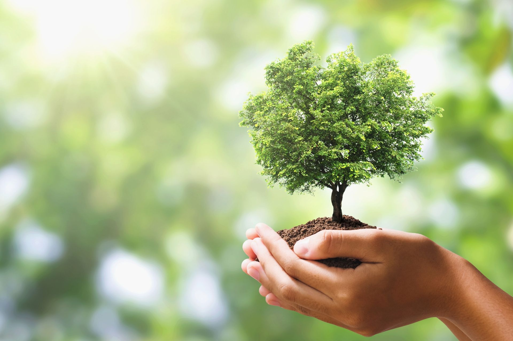
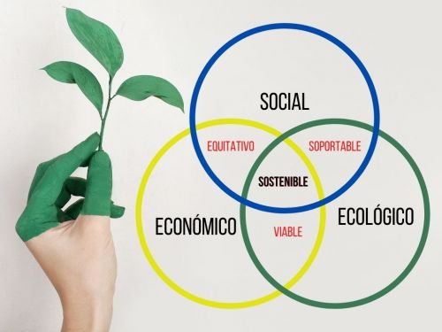

Consultar: Tema 1 Tema 2 Tema 3 Tema 4 Formulario Biografias
El desarrollo sustentable (también llamado desarrollo perdurable o desarrollo sostenible)
es un modelo de desarrollo de la sociedad que busca conciliar las necesidades económicas e
industriales con el equilibrio social y ecológico o medioambiental.
Su objetivo es que el desarrollo económico
no ponga bajo amenaza la vida en el planeta,
para que pueda ser conservado para las generaciones futuras.
Es un tipo de desarrollo que busca el equilibrio entre tres pilares principales: el desarrollo económico,
el cuidado del medioambiente
y el desarrollo social de las poblaciones.

Hoy en día, la sostenibilidad es uno de los avances que busca asegurar que las generaciones futuras habiten un mundo y una comunidad que con el tiempo será igual o mejor que el actual.
Sobre esta base, se han reunido varias características para definir lo que representa el desarrollo sostenible, que se mencionan a continuación:
* El desarrollo sostenible es el que busca la forma en que las actividades económicas son capaces de mantener o mejorar los sistemas ambientales.
* Es el que asegura que las actividades económicas se perfeccionen para una mejor calidad de vida.
* Es el que utiliza los recursos de manera eficiente y promueve el reciclaje y la reutilización.
* Es el que proporciona confianza en la aplicación de tecnologías limpias.
*Es el que repara los ecosistemas dañados y reconoce el verdadero valor de la naturaleza para el bienestar y la comodidad del ser humano.

No olvidemos, que las empresas y los productos también recaen en la necesidad de establecer puntos de inflexión en la sostenibilidad desde la producción del producto, su transporte
hasta la forma de venderlo, tanto para beneficiar nuestra imagen como respaldar los beneficios que conllevan ante el medio ambiente o aplicar nuevos métodos de innovación sostenible en la empresa.
El equilibrio en la cadena de suministro de materia nos proporciona diversos beneficios y ventajas, y un ambiente industrial propicio y consistente ante la posible competencia,
además de poder mantener unos recursos naturales y artificiales sin explotarlos excesivamente.